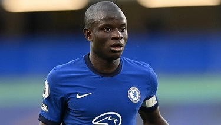

N'Golo Kante
francuski piłkarz malijskiego pochodzenia występujący na pozycji pomocnika w angielskim klubie Chelsea oraz w reprezentacji Francji. Wychowanek US Boulogne, w swojej karierze grał także w takich
zespołach jak SM Caen oraz Leicester City. Od 2016 roku jest reprezentantem Francji.

Powrót